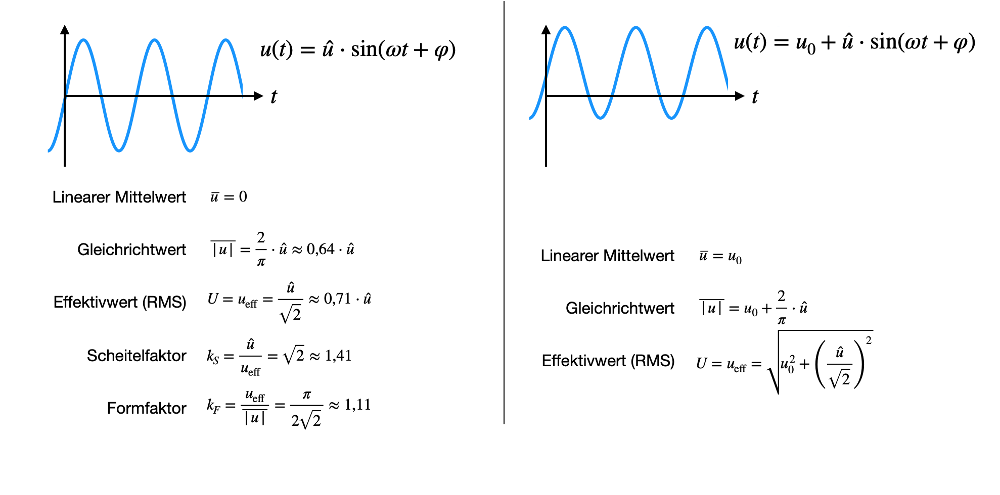
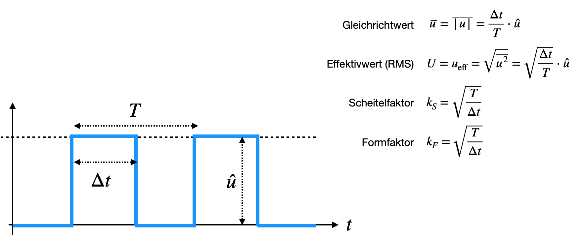

Kenngrößen
Contents
Kenngrößen#
Eine Wechselgröße, z.B. eine Wechselspannung, liegt in der allgemein Form als Sinusschwingung vor. Die Form wollen wir im folgenden wiefolgt bescheiben: $\(u(t) = \hat U \cdot \sin(\omega t)\)$
In elektronischen Schaltungen hat man dazu eine Stromstärke, der dieser Wechselspannung zugehörig ist, und sich allgemein wiefolgt schreiben lässt:
Der Stromstärke haben wir die Phase \(\varphi\) hinzugefügt, da durch besondere Komponenten in der Schaltung, wie z.B. ein Kondensator oder eine Spule, eine Verzögerung zwischen Spannung und Stromstärke auftritt. Im klassischen Stromkreis, mit lediglich einem Widerstand, ist so eine Verzögerung meist vernachlässigbar.
Mit \(\omega = 2\pi f\) wird die Kreisfrequenz bezeichnet, welche ebenfalls die Einheit Hz hat. Genauso wie die Frequenz \(f\).
Die Frequenz \(f = \frac{1}{T}\) ist der Kehrwert der Periodendauer \(T\).
Die Phase \(\varphi\) gibt die Phasenverschiebung oder Verzögerung des Messsignals an
Kenngrößen von Wechselgrößen#
Bei einem Wechselsignal interessiert man sich häufig nicht für den Zeitverlauf, oder den einzelnen Wert zu einem bestimmten Zeitpunkt, den sogenannten Momentanwert. Dieser hat nämlich keine große Aussagekraft, da er sich gemäß der zugrundeliegenden Signalform ständig ändert. Für viele Fragestellungen sind Kenngrößen relevant, die sich aus der Periode des Wchselsignals ermitteln lassen:
Mit \(\hat U\) bezeichnen wir den Scheitelfaktor oder die Amplitude. Dies ist der maximale Ausschlag eines Messsignals innerhalb einer Periode (oder Messzeit) \(T\).
Der Gleichanteil einer Wechselgröße wird über den arithmetischen Mittelwert über eine Perdiode \(T\) berechnet. Es ist nur dann aussagekräftig, wenn nicht gerade eine Signal vorliert was keinen Gleichanteil hat. Andernfalls ist der Wert immer 0. $\(\overline u = \frac{1}{T}\int_{t}^{t+T} u(t)dt\)$
Wenn wir uns jetzt einen Förn oder Lampe, angeschlossen an eine normale Steckdose mit Wechselstrom vorstellen, so ist der Gleichanteil der Wechselspannung 0, aber trotzdem wirkt die Spannung, da Fön oder Lampe arbeiten. Das heißt es kommt offensichtlich nicht auf die Polarität der Spannung an, sondern nur darum, dass im Durchschnitt irgendeine Art von beliebig gepolter Spannung anliegt. Mathematisch gesehen entspricht dies einer Betragsbildung und wird durch den Gleichrichtwert definiert. Das Signal wird mittels analoger Schaltung gleichgerichtet (das sehen wir uns später noch mal genauer an), bevor es zur Mittelwertbildung kommt. Daher auch der Name. Der Gleichrichtwert hat auch für Signale ohne Gleichanteil eine Aussagekraft. Der Gleichrichtwert einer Wechselgröße ist der Mittelwert des Absolutwertes einer Wechselgröße berechnet sich zu: $\(\overline{|u|} = \frac{1}{T}\int_{t}^{t+T} |u(t)|dt\)$
Aus der Physik ist bekannt, dass die Berechnung der elektrischen Leistung nicht über den Einbezug von Gleichrichtwerten erfolgt. Vielmehr muss der Effektivwert (auch RMS genannt = root mean square) berechnet werden: $\(U = u_\mathrm{eff} = \sqrt{\overline{u^2}} = \sqrt{\frac{1}{T}\int_{t}^{t+T}u(t)^2dt}\)$
Mittelwert, Gleichrichtwert und Effektivwert lassen sich für jede beliebige periodische Signalform berechnen und sind unabhängig von der Frequenz. Zwischen Ihnen sind Umrechnungsfaktoren definiert, Scheitelfaktoren oder Formfaktoren, welche das Verhältnis zwischen Effektivwert und anderen Kenngrößen angeben. Wir werden später noch sehen, dass die Messung von Effektivwerten sehr aufwendig ist (die mathematischen Operationen im Intergral zeigen dies auch). Es ist einfacher den Scheitel- oder Gleichrichtwert zu messen und mittels dieser Umrechnungs-Faktoren den Effektivwert anschließend zu berechnen. Die Faktoren sind jedoch für jede Signalform anders!
Scheitelfaktor (Crest-Faktor): $\(k_S = \frac{\hat u}{u_\mathrm{eff}}\)$
Formfaktor: $\(k_F = \frac{u_\mathrm{eff}}{\overline{|u|}}\)$
Allgemein kann man sagen, dass je größer der Scheitelfaktor, desto mehr übersteigt der Spitzenwert eines Signals den Effektivwert. Für die Praxis bedeutet dies, dass bei der Ermittlung eines Effektivwertes die Messeinrichtung aufgrund sehr hoher Spitzenwerte bereits übersteuert, obwohl der Effektivwert eigentlich noch ausreichend Aussteuerungsreserven aufweist. Besonders kritisch ist dieses Verhalten bei Pulsfolgen mit sehr kleinem Tastverhältnis. Hier kann der Scheitelfaktor unter Umständen Werte von 10 oder mehr annehmen. Messgeräte geben daher häufig Scheitelfaktoren vor, welche nicht überschritten werden sollten.
Bei der digitalen Signalverarbeitung können die oben genannten Kenngrößen ebenfalls mathematisch ermittelt werden, indem die Integrale durch diskrete Summen ausgetauscht werden. Der Effektivwert berechnet sich dann wie folgt:
wobei \(n\) die Abtastwerte sind, \(T_A\) der Abstand zwischen zwei Messungen und \(u_k\) der einzelne Messwert zum Zeitpunkt \(k\cdot T_A\).
Sinusschwingung#
Beispiel eines Sinussignals mit und ohne Gleichanteil ist im folgenden Bild einmal dargestellt. Für beide Fälle wurden die Integrale von oben gelöst und aus den entsprechenden Ergebnissen die Formeln für Scheitelfaktor und Formfaktor abgeleitet.

Die Angabe von Scheitel- und Formfaktor haben für Signale mit Gleichanteil keine größere Bedeutung und müssen nicht berechnet werden. Im Vergleich der beiden Beispiele zeigt sich, dass der Effektivwert eines Sinussignals mit Gleichanteil der quadratische Mittelwert der Effektivwerte des Gleichanteils und dem Wert des Gleichanteils \(u_0\) entspricht.
Pulsweitenmodulation#
Ein weiteres Beispiel ist für eine Pulsweitenmodulation berechnet und die Formeln können aus folgendem Bild abgelesen werden. Er handelt sich um ein unsymmetrisches Rechtecksignal. In diesem Fall sprechen wir von einem Pulsweitenmodulierten Signal, da die ‘An’-Zeit innerhalb einer bestimmten Anwendung nicht immer gleich groß sein muss. Das Verhältnis
wird auch Tastverhältnis genannt. Hierüber kann ein Messwert analog codiert und übertragen werden, während das Signal selber digital ist.
